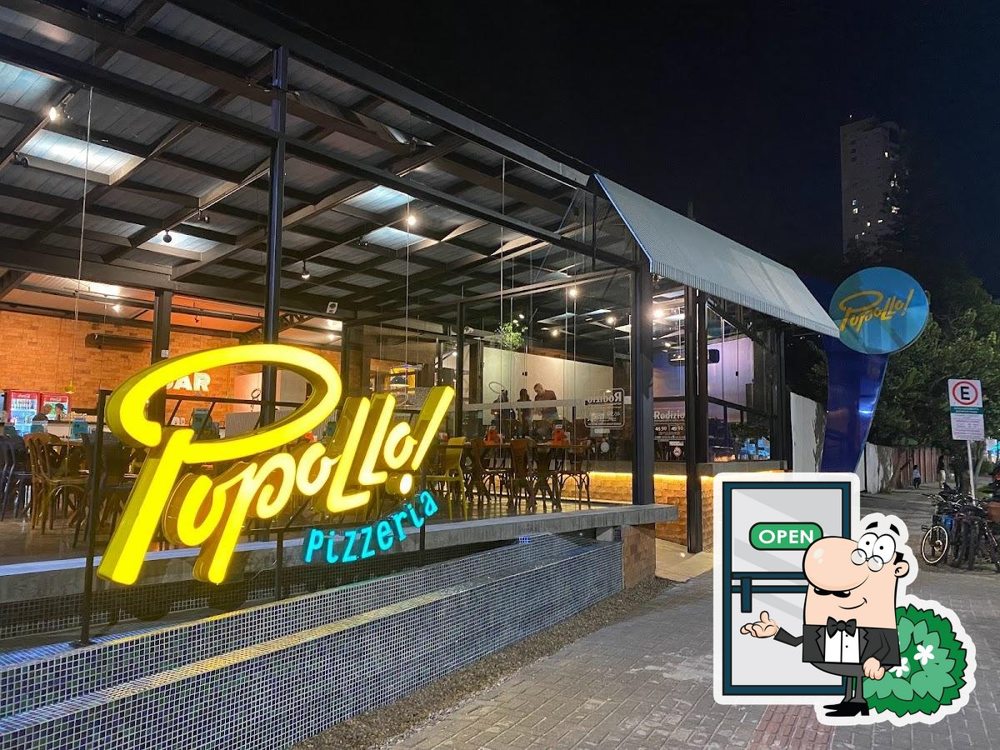
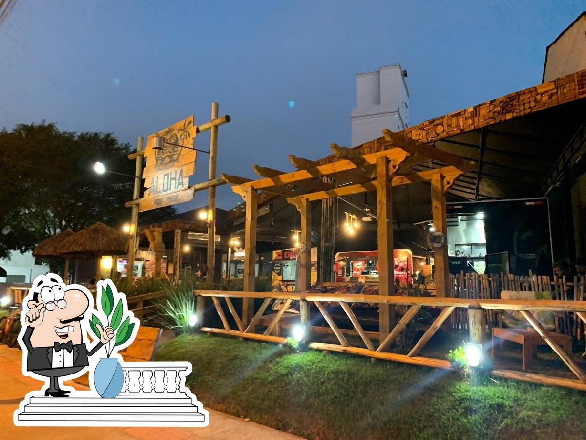

Águas da Brava
Restaurante para quem gosta de frutos do mar. Além disso, também está disponível para locação para eventos.
Localizado na Av. José Medeiros Viêira, 1776 - Praia Brava, Itajaí - SC.

Pizzaria Popollo
Pizzaria com opções de rodízio e à la carte, em seu rodízio está incluso refrigerante a vontade e sorvetes também.
Localizado na Av. Min. Victor Konder, 950 - Fazenda, Itajaí - SC.

Aloha Food Park
Park com food trucks diversificados. Churrasco, hamburguer, sushi e pizza estão presentes em seu cardápio.
Localizado na Av. Carlos Drummond de Andrade, 141 - Praia Brava, Itajaí - SC.